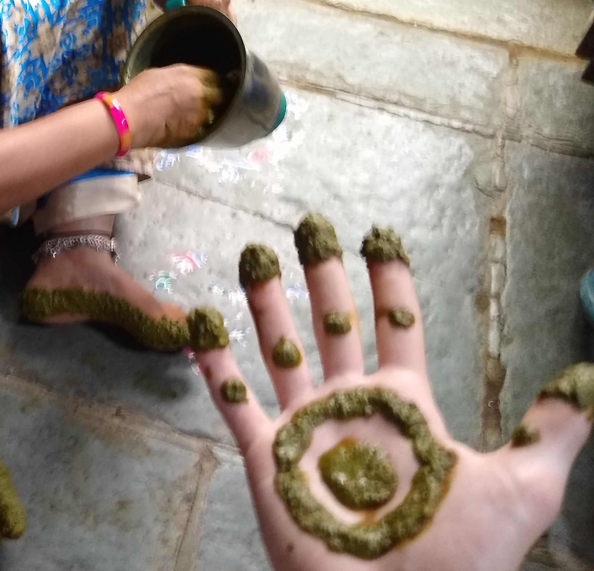
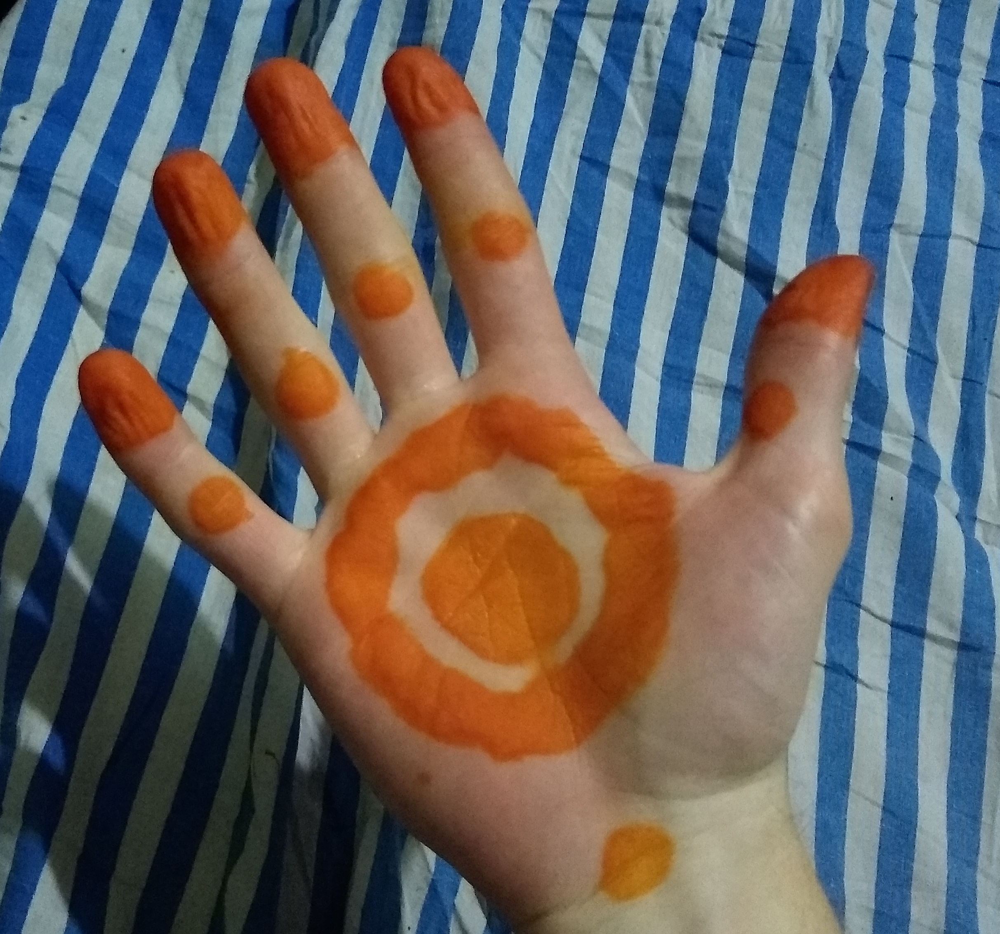

Stuff in India
Please contact me with better ideas for a name!
Gorintaku, hand decor
July 27, 2019

Sumathi has this orange discoloration on her hands. At first I thought it was the residue from something she was cooking, I asked her and didn't quite understand the answer. It didn't go away after a couple days, so I started to think maybe it was some sort of disease or skin condition. I committed to getting an answer, and I came to understand that it had something to do with a plant called "gorintaku". Things still weren't clear, so Sumathi just took me out this plant in the back, and we started picking leaves from it.
When we got inside she put it in a blender with water and a little yogurt. I was back to theory number one, cooking residue! But then she sat me down and told me to hold out my hand, and after a few minutes we were here:
Things became clear about half way through that this was a form of Indian makeup/decoration used to festivals. I had to wait while it would imbue its color into my skin-- where it would stay for about two weeks. Sumathi proceded to put the paster on the sides of her feet.
So ah, here it is! Here's my hand for the next few weeks:
